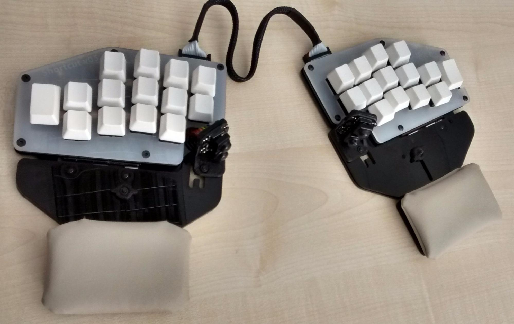

I’ve read many times “Hardware is hard” and wasn’t until now that I started feeling it. The combination of our mistakes with the stuff that is out of our control makes me realize how naive we were with our estimations. On the bright side, all this extra time has been used to improve the prototype and we’ve been having a lot of fun! And to be honest, we are pretty happy about the end result.
Before showing the goods, let’s talk about the bads.
Switches blocked by Customs
We couldn’t ship any prototypes because we haven’t received the switches yet. The package arrived to Spain over two weeks ago but it’s been blocked by the Spanish Customs.
Yesterday afternoon we received an email informing us that the package will be sent during the week. We have a couple hundred Gateron green and yellow switches and 100 Gateron blues and browns SMT so we’ve started building V5s with them and we expect shipping a few today.
Wrist rest position
The V5 felt a bit weird and I didn’t know why. The adjustments that worked for the V3 and V4 felt different in the V5, my index and thumb felt slightly more uncomfortable and we were considering retesting the design to find out why it felt different. Luckily, while trying different configurations I realized that somehow the wrist rest was nearly 2cm out of position.
This may seem something small but it actually had a huge impact on the hand comfort. Intuitively we place our hand in the keyboard by first placing the wrist and then adjusting the position of the fingers. The correct thing is to first align the ring finger with the ring column and then place the wrist in the pad.
Finding this issue was quite a big “Aha!” moment, we weren’t conscious of this change and discovering it made me feel relieved.
Broken PCBs
Half of the PCBs weren’t packed properly and around 20 of them arrived with the reset buttons ripped off and some PCBs scratched.
It’s not a massive deal but we had to order more micro switches and some boards need to be repaired because the solder pads got damaged.
Hand information extraction
One of the main modifications from the V3 to the V5 was removing the adjustable columns in favour of having custom keyboards. We asked for hand pictures of all the testers and Matt developed some awesome software to measure the hands and visualize the information.
Thanks to his software we’ve been able to classify all the hands and reduce the amount of hand types to only a few.
Aesthetic and feel improvements
During the last couple of blog posts I mentioned how we were improving the sturdiness of the V5s and we’ve improved it to a level that I feel very happy about. The base is methacrylate and the thumb is PLA (3D printed), these are not especially solid materials but Manel has implemented multiple smart design features to reduce the “wobbliness” and make it feel solid.
There has been a few aesthetic and feel improvements, probably the biggest ones are the Italian leatherette wrist rest and the home made custom cable.
The leatherette is much more soft and resistant than the black one used in previous prototypes
We’ve used cable braid and heat shrink tube to make the cable look better and be more comfortable to adjust.
And this is the result!

Next steps:
Like last week, build and ship the V5s!